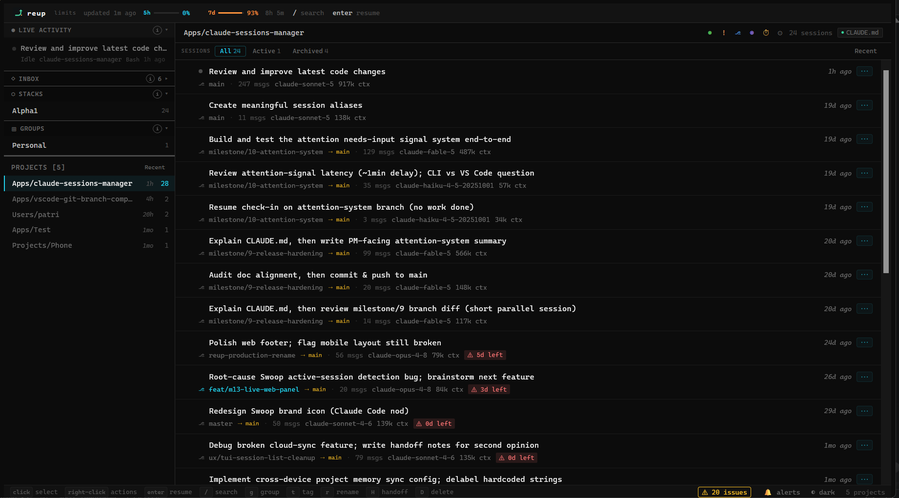
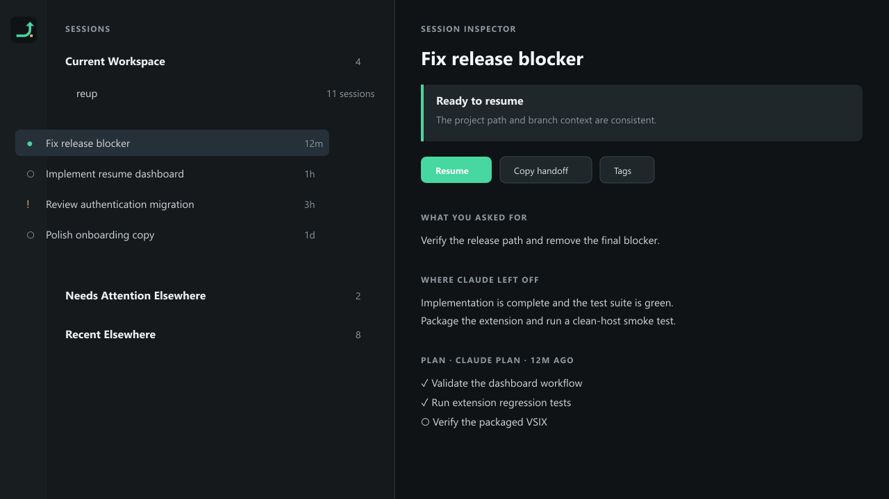

Reup is a local continuity control plane for Claude Code: it shows what's active, stale, risky, archived, or ready to resume — before you commit to reopening it. No account, no hosted backend, no telemetry, no transcript upload.
Most tools in this space are session browsers: they show you a list, let you pick one, and open it. Claude Code itself already has a capable native picker with global search in the resume flow. Reup's role is broader — before you commit to resuming, it tells you what was happening, whether the context is still valid, whether any session needs attention right now, and which action is safest next.
The intelligence layer — health signals, branch drift detection, usage awareness, and a recovery path for corrupt indices — is what no other tool in this space ships.
The web dashboard, the terminal UI, and the VS Code Workspace Cockpit all read the same local session state.

reup web

Every signal below is derived from local Claude Code files on read — never stored, never stale.
Interrupted, expiring, path-missing, and heavily-compacted signals; branch drift
against the current git HEAD; a remote-active heuristic for sessions running
elsewhere; and non-destructive reup doctor health checks with an
explanation and a suggested action for every finding.
A passive dashboard that stays open in a browser tab. Live SSE updates, a working/waiting/idle/needs-input status dot per session, triage inbox, tags and work stacks, and a session inspector with Resume/Handoff/Rename/Archive actions.
Keyboard-first, optimized for quick scanning, filtering, and resuming without leaving the terminal. Adaptive session-ID prefixes and ranked shell completion for PowerShell, Bash, and Zsh.
A full-screen resume dashboard inside VS Code, with workspace-native companion views, a session inspector, and resume through the Claude Code extension or the integrated terminal.
Know the moment a session waits on a permission decision or idle input. Sessions needing attention pin to the top of the web strip and pulse in the TUI, with optional desktop notifications — no webhook, no cloud relay.
reup handoff compiles a compact Markdown continuation packet from
transcript-supported facts, so you (or a teammate) can pick a session back up without
reopening every transcript.
✓All transcript analysis happens on your machine.
✓No usage metrics, crash reports, or telemetry.
✓The web server binds to 127.0.0.1 only.
✓Archiving is reversible; permanent delete is explicit and blocked for active sessions.
✓No account, no Reup cloud, no sync backend.
✓MIT licensed. Read the source, fork it, self-host it.
Assessed against the four tools reviewed in a mid-2026 survey of Claude Code session-browsing tools.
| Capability | Reup | Mantra | CCHV | claude-history | Built-in |
|---|---|---|---|---|---|
| Session signals (interrupted, expiry, path-missing) | ✓ | — | — | — | — |
| Branch drift detection | ✓ | — | — | — | — |
| Lost & Found (orphaned / expiring sessions) | ✓ | — | — | — | — |
| Index corruption recovery | ✓ | — | — | — | — |
| Deep transcript search | ✓ | — | — | ✓ | — |
| Live account usage limits | ✓ | — | — | — | — |
| Handoff / continuation packet | ✓ | — | — | — | — |
| TUI + Web + VS Code, all three | ✓ | — | — | — | — |
| Zero configuration | ✓ | — | partial | — | ✓ |
| No cloud, no account, no telemetry | ✓ | — | — | ✓ | ✓ |
Full comparison and methodology in Documents/FEATURES.md.
Per-user installers, no admin rights required. Build from source instead if you'd rather not run an unsigned binary yet.
| Platform | Artifact | Notes |
|---|---|---|
| Windows | reup-setup-windows-x64-v*.exe |
Per-user install, adds reup to PATH, optional PowerShell completion.
Unsigned.
|
| Windows (portable) | reup-windows-x64-v*.zip |
Extract and run install.ps1. No installer UI. |
| macOS | reup-macos-universal-v*.tar.gz |
Extract and run install.sh. Not notarized yet. |
| Linux | reup-linux-x64-v*.tar.gz |
Extract and run install.sh. |
| VS Code | reup-vscode-*.vsix |
Install from the Extensions view or code --install-extension.
|
Windows/macOS code signing and notarization, CI-backed provenance attestations, and Linux
.deb/.rpm packages are open decisions tracked in
ROADMAP.md.
git clone https://github.com/patriziofilloramo/claude-code-reup.git reup
cd reup
npm install
npm run build
npm link
reup